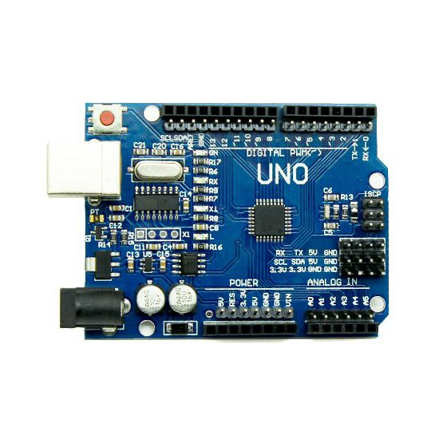

Arduino Uno 🖥️🔧
The Arduino Uno is an open-source microcontroller board based on the ATmega328P chip, designed to make it easy for beginners and professionals alike to create interactive electronic projects. It’s widely used in various DIY projects and prototyping for electronics and robotics.
Key Features:
-
Microcontroller 🧠:
The Arduino Uno uses the ATmega328P microcontroller, which is the brain of the board. This chip processes inputs and sends outputs based on the program written in the Arduino IDE (Integrated Development Environment). -
Digital I/O Pins 🔲:
The board has 14 digital pins (labeled from 0 to 13), which can be used for input or output signals (e.g., to control LEDs, sensors, etc.). -
Analog Pins 📊:
It includes 6 analog input pins (labeled A0 to A5) that can read sensors providing varying voltages and convert them into digital values (useful for sensors like temperature or light sensors). -
Power Supply ⚡:
The Arduino Uno can be powered via USB connection or through an external 9V power supply connected to the barrel jack. -
Built-in LED 💡:
The board has a built-in LED on pin 13 that can be controlled through the code. It’s useful for simple testing and troubleshooting. -
USB Port 🔌:
The USB port is used to upload code to the Arduino from the Arduino IDE on your computer. It also provides power when connected to a computer. -
Reset Button 🔄:
The reset button restarts the program running on the microcontroller, which is helpful when troubleshooting or testing code changes. -
Serial Communication 💬:
The Arduino Uno supports serial communication via the USB port, making it easy to send and receive data between your computer and the board.
How It Works ⚙️:
-
Programming 💻:
You write the program (sketch) in the Arduino IDE on your computer, and then upload it to the Arduino Uno via USB. -
Executing Instructions 🚀:
The ATmega328P processes the instructions and sends signals to the I/O pins to interact with connected devices (e.g., motors, sensors, lights). -
Sensors and Actuators 🧠➡️⚙️:
Sensors can be connected to the analog or digital pins to read data (like temperature or motion). Actuators such as LEDs, motors, and displays can be connected to output pins to control them based on the sensor data.
Common Uses 🔧:
-
DIY Projects 🛠️:
Arduino Uno is perfect for beginners learning about electronics, robotics, and programming. It’s commonly used in hobby projects like building an automatic hand sanitizer dispenser, home automation systems, or even basic robots. -
Prototyping ğŸ“:
It’s great for testing out new ideas and creating quick prototypes for electronic projects. -
Educational Tools ğŸ“:
Schools and universities often use the Arduino Uno to teach students about electronics, coding, and the fundamentals of engineering.
Advantages ✅:
- Affordable 💰
- Easy to use for beginners 👶
- Open-source and highly customizable 🛠️
- Huge community and plenty of tutorials 🌍
Conclusion 🏁:
The Arduino Uno is an ideal platform for learning electronics and creating interactive systems. Whether you're a hobbyist or a professional, it’s a versatile tool that’s easy to use and perfect for a wide range of projects.